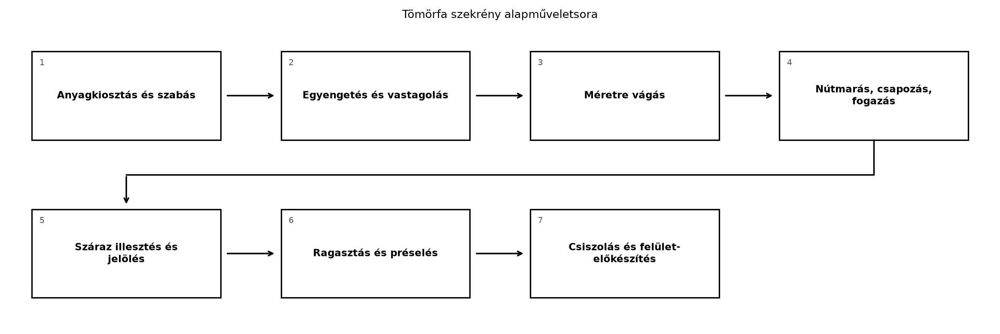

A tömörfa szekrény nem egyszerűen „deszkából összecsavarozott doboz”. A fa élő anyag: nedvesség hatására mozog, ezért a szekrény szerkezete úgy épül, hogy a zsugorodást és dagadást láthatatlanul, feszültség nélkül felvegye. Ezt a gondolatot gyakoroljuk most egy keretszerkezetű, egy kávaszerkezetű és egy vegyes szerkezetű szekrény gyártásán keresztül.
Képzelj el egy kétajtós, kétfiókos, 900 × 480 × 1800 mm-es tömörfa szekrényt. A robbantott ábrán a két oldal nem tömör tábla, hanem keretes oldalelem: függőleges és vízszintes keretlécek alkotják a keretet, közöttük betét (panel) helyezkedik el. A betét a keret belső nútjában ül, kis mozgási hézaggal. A szekrény fiókjai kávaszerkezetűek: oldalaik, előlapjuk, hátlapjuk és fenekük deszkából készül, a sarkokon fogazva vagy idegencsappal. A hátfal vékony rétegelt lemez, amelyet a korpusz hátsó élébe mart nútba tolnak, nem ragasztanak be. Így a fa szabadon dolgozhat, és a szekrény mégsem vetemedik szét.
Definíció. A keretszerkezet olyan táblaszerű elem, amelyben merev, keskeny keretlécek (álló és fekvő lécek) hordozzák a terhelést, a köztük lévő betét pedig kitöltő felület. A betét lehet tömörfa panel, rétegelt lemez vagy furnérozott lap. A betétet a keret nútjába illesztik, de nem ragasztják be, mert a fa nedvesség hatására mozog.
Definíció. A kávaszerkezet olyan dobozszerű szerkezet, amelyben a lapok (oldalak, fenék, tető, fiókelő, fiókhát, fiókfenék) egymással élükön kapcsolódnak. A sarkok leggyakrabban egyenes fogazással vagy fecskefarkú fogazással készülnek, de lehetnek köldökcsapos (tiplizett) vagy lamellós kötések is.
Definíció. Az állványszerkezet függőleges oszlopokból, lábakból és vízszintes hevederekből álló váz, amelyhez táblákat, betéteket, ajtókat és fiókokat rögzítünk. A vegyes szerkezet a fenti megoldásokat ötvözi: például keretes oldalak, kávás fiókok, keretes ajtó, állványlábak.
Miért nem tömör tábla az oldal? Egy 480 mm széles tömör bükk tábla a páratartalom változásakor akár 3–5 mm-t is mozoghat szélességében. Ha ezt a táblát mereven körberagasztanánk vagy csavaroznánk, a szekrény elvetemedne, az illesztések szétnyílnának. A keret keskeny lécei alig mozognak, a betét viszont a nútban szabadon tágulhat, ezért a szerkezet stabil marad.
A pontos műveletsort a műszaki rajz és a szabásjegyzék határozza meg. A rajz–anyag–művelet hármas elvét követve előbb a rajzon rögzítjük a méreteket, abból jegyzéket készítünk, majd a jegyzékből műveletsort. A gyártási folyamatot az alábbi diagram mutatja.

A keretszerkezetű oldal készítésekor a keretléceket nútmarás előtt méretre gyaluljuk, mert a nút pontos helyzete a kész keresztmetszethez igazodik. A nútot a keret belső élébe marjuk, jellemzően a betét vastagságának megfelelő szélességgel (például 6 mm, a lécvastagság kb. negyede) és kb. 10 mm mélységgel (tájékoztató érték, ellenőrizendő: a betét és a szerszám szerint). Ezután készítjük a vésett csapozást a sarkokon. A nút és a csap együtt dolgozik: a csapvállnak a nút vonalához kell esnie, hogy a betét a keret középvonalában üljön.
A kávaszerkezetű oldal készítésekor a deszkákat előbb táblásítjuk, vagy eleve széles, szárított, vetemedésmentes fűrészáruból alakítjuk ki. A táblákat derékszögbe és méretre munkáljuk, majd a sarkokat fogazással vagy lamellóval kapcsoljuk. Fogazásnál a fog hossza a deszka vastagságával egyenlő; a fogazógép vagy a sablonos felsőmaró pontos, azonos osztású fogakat készít.
Gépbiztonság. Minden gépi művelet betanított, felügyelt tanulónak szól; védőberendezés nélkül, egyedül, fáradtan ne dolgozz! A faipari gépekre vonatkozó biztonsági követelményeket az MSZ EN ISO 19085 sorozat tárgyalja (ellenőrizendő: hatályos verzió és a gépkönyv). A porképző műveletnél elszívást és légzésvédőt használj, mert a keményfa-por rákkeltő anyag (ellenőrizendő: aktuális határérték és besorolás).
Tervezzünk egy keretszerkezetű oldalelemet, amelynek kész külső mérete 480 × 1800 mm. A keretlécek szélessége 60 mm, a betét vastagsága 6 mm, a nút mélysége 10 mm, a mozgási hézag 2 mm oldalanként. A betét kész szélességét így számoljuk:
ahol a keret külső szélessége, a keretléc szélessége, a nút mélysége, az oldalankénti mozgási hézag.
Behelyettesítve:
A betét magassága hasonlóan:
Ellenőrzés. A betét szélessége kisebb kell legyen a nútfenekek közötti távolságnál, tehát kisebb mint mm. Az eredmény 376 mm, ami jó, mert 4 mm-es össz-mozgási hézagot ad.
Az interaktív változat betétméret-számító: a keret méreteit, a lécszélességet, a nútmélységet és a hézagot állítva a rajz és a betétméret élőben változik, és figyelmeztet, ha a betét nem fér el a nútban.
A kalkulációhoz készítsünk mintatáblázatot egy 900 × 480 × 1800 mm-es, keretes oldalú, kávás fiókos, tömör bükk szekrényre. Az árak mintaárak, a számítás menetét mutatják.
| Tétel | Anyag | Mennyiség | Egység | Egységár (mintaár, Ft) | Érték (Ft) |
|---|---|---|---|---|---|
| 1. | Tömör bükk fűrészáru (szárított) | 0,13 | m³ | 320 000 | 41 600 |
| 2. | Rétegelt hátfal, 4 mm | 1,9 | m² | 5 200 | 9 880 |
| 3. | PVAc ragasztó, D3 | 0,6 | kg | 3 200 | 1 920 |
| 4. | Csiszolóanyag, P120–P240 | 1,5 | m² | 2 800 | 4 200 |
| 5. | PU lakk, matt | 1,2 | l | 8 500 | 10 200 |
| Összes közvetlen anyagköltség | 67 800 |
Ellenőrző becslés. A tömör fűrészáru köbméterenkénti ára a legnagyobb tétel; 0,13 m³ × 320 000 Ft/m³ ≈ 41 600 Ft. A többi anyag együttesen körülbelül 26 000 Ft, így a végösszeg nagyságrendje reális. Az anyagkihozatalt és a vágási veszteséget a Szabásjegyzék és anyagnorma alfejezet szerint kell felszorozni (tipikusan 10–20% ráhagyás).
Cél. Egy 480 × 1800 mm kész méretű, keretes oldalelem elkészítése tömör bükk keretlécekből és 6 mm-es tömörfa betétből.
Anyagok. Szárított, hibamentes bükk keretléc nyers méretben kb. 65 × 28 mm (kész: 60 × 24 mm; tájékoztató ráhagyás); bükk betétpanel 6 mm; D3 PVAc ragasztó.
Szerszámok és gépek. Asztalos körfűrészgép, szalagfűrészgép, egyengető gyalugép, vastagsági gyalugép, alsómaró nútmaróval, hosszlyukfúró vagy csapozó marógép, derékszögelő, tolómérő, acélvonalzó, ragasztó ecset, szorítók.
Gépbiztonság és egyéni védőeszközök. Faipari gépet csak betanított, felügyelt tanuló kezelhet. Viselj védőszemüveget, fülvédőt, munkaruhát; porképző műveletnél kapcsold be az elszívást és viselj FFP3 (keményfapor) légzésvédőt (ellenőrizendő: kockázatértékelés). A körfűrész hasítóéke, védőburkolata és a tolófa mindig legyen a helyén. Tilos kesztyűben forgó szerszám közelében dolgozni.
Indítás előtti ellenőrzés. Ellenőrizd a szerszámok rögzítését, a védőburkolatokat, a nútmaró átmérőjét és forgásirányát, az elszívást, a munkadarab szeg- és repedésmentességét, a munkaterület szabad voltát és a vészleállító elérhetőségét.
Lépések.
Cél. Egy 400 × 220 × 420 mm kész méretű, tömör bükk fiók kávás szerkezettel, fecskefarkú fogazással.
Anyagok. 15 mm vastag bükk oldal- és előlapanyag, 6 mm rétegelt fiókfenék, D3 ragasztó.
Szerszámok és gépek. Körfűrész, egyengető és vastagsági gyalu, fogazógép vagy sablonos felsőmaró, alsómaró fenéknút-maróval, derékszögelő, szorítók.
Gépbiztonság. A művelet betanított, felügyelt tanulónak szól; védőberendezés nélkül, egyedül, fáradtan ne végezd. Védőberendezések: egyengető és vastagsági gyalu – késtengely-védő; körfűrész – védőburkolat, hasítóék, tolófa; alsómaró – védőburkolat, leszorító; fogazógép – leszorító, védőburkolat; a munkadarabot a leszorítóval és a tolóval vezesd, soha ne nyúlj a szerszám felé, amíg a gép forog. Egyéni védőeszköz: védőszemüveg, fülvédő, FFP3 légzésvédő (bükkpor), kesztyű forgó szerszám közelében tilos. A szerszámon jelölt legnagyobb megengedett fordulatszámot ne lépd túl (ellenőrizendő: gyártói adatlap).
Indítás előtti ellenőrzés. Szerszámok rögzítése és állapota, védőburkolatok, elszívás bekapcsolva, a munkadarab szeg- és repedésmentes, a munkaterület szabad, a vészleállító elérhető.
Lépések.
A kész szekrényrészeket a szerelés előtt és után is ellenőrizd.
Tünet. Egy megrendelő néhány hét után visszajelzi, hogy a tömörfa szekrény ajtaja nem záródik, a függőleges élénél 2–3 mm-es rés látható. Az ajtókeret látszólag elcsavarodott.
Lehetséges okok. (1) A betét túl széles, dagadáskor feszítette a keretet. (2) A betétet körben ragasztották a nútba. (3) Az ajtókeret lécei még tartalmazhattak feszültséget, mert nedves vagy rosszul szárított anyagból készültek. (4) A beépítéskor az ajtót túlzottan meghúzó vasalat húzta el.
Vizsgálat. Mérjük meg a betét szélességét és a nútfenék távolságot. Ha a betét szélessége a hézag levonása nélkül a nútfenék távolsággal közel egyenlő, akkor dagadt. Ellenőrizzük a ragasztás nyomait a nútban. Mérjük a fa nedvességtartalmát: ha 12% feletti, a környezet magas páratartalma is okozhatta.
Valódi ok. A betét kész méretét nem a mozgási hézaggal számolták, hanem a nútfenék távolsággal egyenlőre vágták. Szárazon még jól illett, de magasabb páratartalomnál a betét megdagadt, a nútban megfeszült, és a vékony keretsarok csapozását elcsavarta.
Javítás. Az ajtót szét kell szerelni vagy legalább a betétet kicsavarni a nútból; a betét szélességéből 4–6 mm-t le kell venni, az éleket újra csiszolni, majd a betétet visszailleszteni. Ha a keret már maradandóan csavarodott, a keretléceket újra kell készíteni. A vasalatot is ellenőrizni kell.
Megelőzés. A betét méretét mindig a mozgási hézaggal számoljuk, a betétet nem ragasztjuk körbe, és a készterméket a felhasználási hely páratartalmához közeli állapotra szárított faanyagból készítjük.
1. feladat (A). Fogalmazd meg saját szavaiddal, mi a különbség a keretszerkezet és a kávaszerkezet között! Miért használunk keretszerkezetet tömörfa szekrény oldalakhoz?
2. feladat (A). Rajzold le (szövegesen) egy keretes oldalelem sarokkötését: jelöld a függőleges lécet, vízszintes lécet, nútot, betétet, csapot és fészket! Írd le, milyen a helyes csap- és fészekillesztés.
3. feladat (B). Számítsd ki egy 620 × 1850 mm-es keretes oldalelem betétjének kész szélességét és magasságát, ha a keretlécek szélessége 65 mm, a nút mélysége 10 mm, a mozgási hézag oldalanként 2 mm!
4. feladat (B). Készítsd el egy fogazott kávás fiók műveletsorát! Sorold fel, milyen gépet használnál az egyes lépésekhez, és milyen ellenőrzést végeznél!
5. feladat (C). Egy megrendelő tömör kőrisből készült szekrényt szeretne. A kőris is jelentősen dolgozik (húrirányú zsugorodás kb. 8 %, ellenőrizendő: faanyagtani táblázat). Milyen szerkezeti megoldást javasolnál: tömör tábla vagy keret-betét oldalt? Indokold a választ, és írd le, milyen hézagot hagynál a betétnél!
6. feladat (D). Készítsd el az alábbi anyaglista alapján az anyagköltség-kalkulációt! Mennyiség és egységár: tömör kőris 0,15 m³ (360 000 Ft/m³), rétegelt hátfal 2,0 m² (5 000 Ft/m²), ragasztó 0,7 kg (3 400 Ft/kg), csiszolóanyag 2,0 m² (2 600 Ft/m²), lakk 1,3 l (9 000 Ft/l). Mennyi a közvetlen anyagköltség? Ellenőrizd a nagyságrendet!
Önellenőrzés – válaszok
1. feladat megoldása. A keretszerkezet merev lécekből áll, amelyek a terhelést hordozzák, a betét csak kitöltő elem, és a nútban mozoghat. A kávaszerkezet táblákból összeépített doboz, ahol az élek kapcsolódnak. Tömörfa oldal keretszerkezettel készül, mert a széles tömör tábla zsugorodás-dagadása elcsavarná a korpuszt.
2. feladat megoldása. A szöveges rajz: a függőleges lécbe fészket vésünk, a vízszintes léc végén csapot alakítunk ki; mindkét léc belső élében nút fut. A betét a nútba csúszik. A csap a fészekben szárazon enyhén szorul, válla zárt, a csap hossza 1–2 mm-rel rövidebb a fészekmélységnél.
3. feladat megoldása.
Ezután adhatunk még szerszámráhagyást a csiszoláshoz, de a kész méretet így számoljuk.
4. feladat megoldása. A fiók műveletsora: (1) egyengetés, (2) vastagolás 15 mm-re, (3) méretre vágás, (4) fenéknút marása, (5) fogazás sablonos felsőmaróval vagy fogazógéppel, (6) száraz illesztés a fenékkel, (7) ragasztás, préselés (a fenék a nútban van, nincs beragasztva), (8) csiszolás. Gép: egyengető gyalu, vastagsági gyalu, körfűrész, fogazó gép/felsőmaró, alsómaró, szorítók. Ellenőrzés: derékszög, átlók, foghézag, csiszolt felület.
Gépi műveletnél a fogazógépen a munkadarabot leszorítóval fogjuk, a szerszám forgása közben nem nyúlunk a vágáshoz, elszívást használunk.
5. feladat megoldása. Keret-betét oldalt javasoljunk, mert a kőris is jelentősen dolgozik. A betét mozgási hézagja oldalanként 2–3 mm, a betétet nem ragasztjuk körbe. Ezzel elkerüljük a vetemedést.
6. feladat megoldása. A kalkuláció:
Összesen:
Ellenőrzés: a tömör kőris a legnagyobb tétel, a többi összege kb. 29 000 Ft, így a 83 280 Ft reális, mintaár.
A tömörfa szekrényeket keretszerkezetben, kávaszerkezetben, állványszerkezetben vagy vegyesen építjük. A keretes oldal keskeny keretlécekből és a köztük mozgó betétből áll; a betétet a nútba nem ragasztjuk, hanem oldalanként 2–3 mm mozgási hézagot adunk. A betét kész szélességét a keret külső méretéből, a keretléc szélességéből, a nút mélységéből és a hézagból számoljuk. A kávasarkokat fogazással vagy idegencsappal készítjük. A gyártás lépései: anyagkiosztás, szabás, egyengetés, vastagolás, méretre vágás, nútmarás, csapozás/fogazás, száraz illesztés, ragasztás, préselés, csiszolás. Gépbiztonság: fapor ellen elszívás és FFP3 légzésvédő, forgó szerszám közelében tilos kesztyű. A kész elemet derékszög, átló, síkfekvés és illesztési hézag szerint ellenőrizzük. Továbbvitt eredmény. A tömörfa szekrény gyártásának teljes műveletsorát a Vizsgaremek és gyakorlati vizsgafeladat: tervezés, dokumentáció, értékelés témában használjuk fel, mert a vizsgaremek gyakran keret- vagy kávaszerkezetű tömörfa bútor.